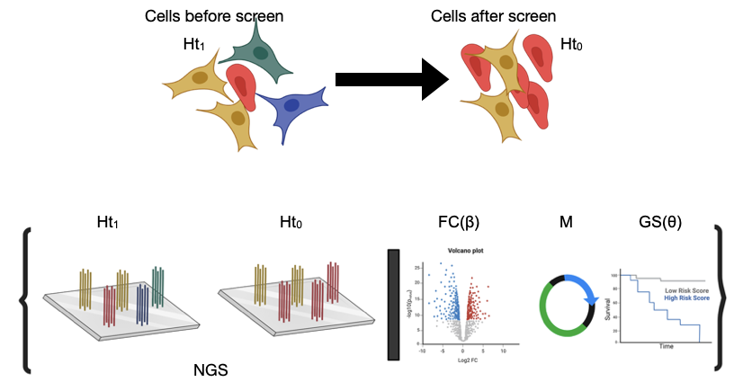
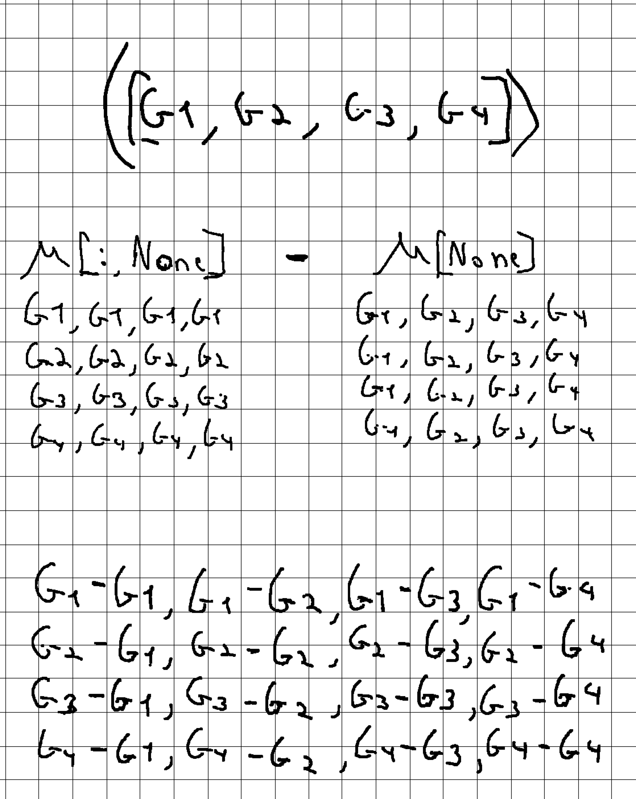
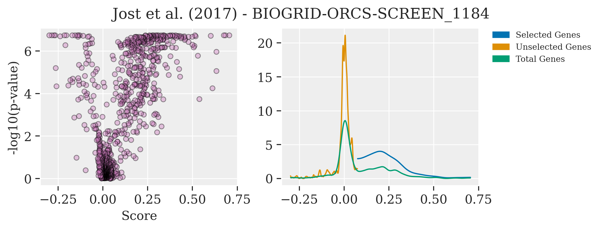
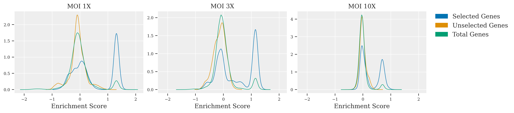
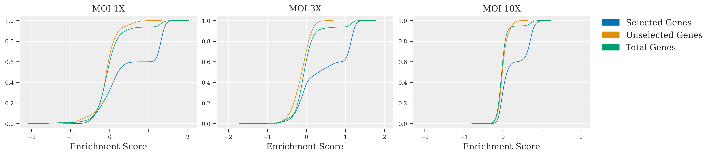
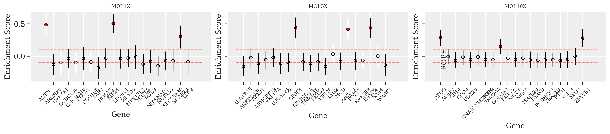

Using the Bayesian Approach with PyMC to Analyze Functional Genomics Screens, Part 2#
Advancing Gene Enrichment Analysis: Abundance Testing Using Bayesian Inference#
Following up on our initial dive into the world of Bayesian statistics in genetics, especially within the nuances of cell biology, here, I’m moving forward to discuss applying Bayesian inference to decipher gene abundance from CRISPR screens. At the heart of these analyses lies the crucial task of ranking gene abundance, a step pivotal for understanding genetic influences and interactions within cells.
In the realm of CRISPR screens, accurately determining gene abundance before and after the intervention is key to identifying genes that play significant roles in the studied condition or trait. In this context, the traditional approach often leans on straightforward comparisons and null hypothesis testing. However, the Bayesian method introduces a nuanced layer by implementing hypothesis testing in a way that incorporates prior knowledge and observed data to update our beliefs about the unknown parameters.
In upcoming discussions, I’ll dive into the practical steps of implementing Bayesian hypothesis testing in gene abundance analysis. This will include selecting priors based on functional genomics data, estimating parameters that reflect our biological understanding, and calculating fold changes that reveal the most impactful genes. By sharing this journey, I hope to illuminate the path for others interested in harnessing Bayesian inference for their genetic research, making the analysis of complex data more accessible and insightful.
Key Inspirations for Bayesian Analysis in Genetics
My work was inspired by the great notebook from the PyMC group:
Another notebook which was very useful:
The original article that informed much of this analysis is “Bayesian Estimation Supersedes the t Test” by John Kruschke and a very usfull review: Ketlter et al
We begin our exploration by revisiting the simulation generator introduced in the first part of this blog series. This tool is pivotal in crafting our datasets for analysis, simulating the nuanced conditions we encounter in CRISPR screens. Below is the code snippet that kicks off our journey:
runSimulation(targetNum = 5, geneNum = 20, effectSgRNA = 2, getData = True, mu = 20, a = 1.2, low = 1, high = 1, size = 10_000, FalseLimits = (0.05,0.25), ObservationNum = (20,3))
With this command, we initiate the generation of three distinct datasets. Each dataset is designed to embody increasing levels of noise, achieved by adjusting the MOI (Multiplicity of Infection) levels of the screen. MOI serves as a crucial factor here, reflecting the number of unique sgRNAs expressed per cell. As we increment the MOI, we’re essentially increasing the variety of guides per cell, which, in turn, elevates the noise in our final dataset. This step mirrors the real-world scenario in genetic screens, where the diversity of sgRNA can significantly impact the clarity and interpretability of our results.

By systematically increasing the MOI, we simulate conditions that range from ideal to highly challenging, providing a comprehensive view of how Bayesian inference can be adapted and applied across varying degrees of data complexity. This approach not only tests the robustness of our Bayesian models but also deepens our understanding of the intricacies involved in genetic screen data analysis.
Show code cell source
import os
import glob
import numpy as np
import pandas as pd
import seaborn as sns
import matplotlib.pyplot as plt
import arviz as az
from arviz import hdi
import pymc as pm
import pytensor.tensor as pt
import xarray as xr
import jax
import warnings
import re
import random
from arviz import hdi
import pdb
import matplotlib.patches as mpatches
import cloudpickle
%config InlineBackend.figure_format = 'retina'
warnings.simplefilter(action="ignore", category=(FutureWarning, UserWarning))
RANDOM_SEED = 8927
np.random.seed(RANDOM_SEED)
plt.style.use('default')
# plt.style.use('fivethirtyeight')
from aipys_analyse.simulation.runSimulation import runSimulation
az.style.use("arviz-darkgrid")
az.rcParams["stats.hdi_prob"] = 0.89
az.rcParams["stats.ic_scale"] = "deviance"
az.rcParams["stats.information_criterion"] = "waic"
plt.rcParams["figure.figsize"] = (3.5, 2.5) # sinnle column
# #plt.rcParams["figure.figsize"] = (7, 4) # double-column
sns.set_context("paper", font_scale=1.5)
#sns.set_palette("colorblind")
plt.rcParams['figure.dpi'] = 150
plt.rcParams['font.family'] = ['Times New Roman', 'serif']
plt.rcParams['font.family'] = ['serif']
plt.rcParams['font.size'] = 12
plt.rcParams['axes.labelsize'] = 12
plt.rcParams['axes.titlesize'] = 12
plt.rcParams['xtick.labelsize'] = 12
plt.rcParams['ytick.labelsize'] = 12
Show code cell source
class ScreenSimulator:
def __init__(self,moi):
self.moi = moi
self.siMobj = self.simulate()
self.finObj = self.runmodel()
def simulate(self):
return runSimulation(targetNum = 3, geneNum = 20, effectSgRNA = 2,getData = True, mu = 20, a = 1.2,low = 1, high = self.moi,size = 10_000,FalseLimits = (0.05,0.5),ObservationNum = (70,3))
def runmodel(self):
dftall = self.siMobj.dfTall
dftall.loc[dftall['readCount'] <= 0, 'readCount'] = 1
dftall.loc[dftall['readCount'] % 1 != 0, 'readCount'] = 1
sgRNA, mn_sgRNA = dftall_h0.sgRNA.factorize()
Genes, mn_Genes = dftall_h0.Gene.factorize()
h0 = dftall_h0.readCount.values
h1 = dftall_h1.readCount.values
M = dftall_M.readCount.values
xy = np.ones((len(h0),2))
xy[:,0] = h0
xy[:,1] = h1
coords = {"sgRNA": mn_sgRNA,"Genes": mn_Genes,"experiment":[0,1]}
coords["experiment"] = [0, 1]
with pm.Model(coords=coords) as model:
#Hyper-proirs
beta_bar = pm.Normal("beta_bar", 1, 1)
sigma_bar = pm.HalfNormal("sigma_bar", 1)
theta_bar = pm.Normal("theta_bar", 1, 1)
sigma_theta_bar = pm.HalfNormal("sigma_theta_bar", 1)
#Hyper-proir noncentered
z_beta = pm.Normal("z_beta", 0, 1, dims=("sgRNA"))
beta = pm.Deterministic("beta", beta_bar + z_beta*sigma_bar)
z_theta = pm.Normal("z_theta", 0, 1, dims=("sgRNA"))
theta = pm.Normal("theta",theta_bar + z_theta*sigma_theta_bar)
chol, _, _ = pm.LKJCholeskyCov(
"chol_cov", n=2, eta=3, sd_dist=pm.Exponential.dist(2.0), compute_corr=True
)
ve = pm.Deterministic("ve", pm.math.dot(chol,pt.stack([theta,beta])).T)
Mu_Y = pm.Deterministic("Mu_Y",h1 + pm.math.exp(ve[sgRNA,1])*h0)
Mu_X = pm.Deterministic("Mu_X",pm.math.exp(ve[sgRNA,0])*M)
XY_obs = pm.Data("XY_obs", xy, mutable=True)
sigma = pm.Gamma("sigma",mu = 28.5, sigma = 10.5,dims = ("experiment"))
count_h0 = pm.NegativeBinomial("count_h0", mu = Mu_X, alpha = sigma[0], observed=h0)
count_h1 = pm.NegativeBinomial("count_h1", mu = Mu_Y, alpha = sigma[1], observed=h1)
trace = pm.sample(1000, tune=2000, target_accept=0.95, chains = 4, random_seed=RANDOM_SEED)
return {'trace':trace, "X":h0, "Y":h1, "M":M, "sgRNA":sgRNA, "Genes":Genes, "mn_sgRNA":mn_sgRNA, "mn_Genes":mn_Genes,"coords":coords,"hit":simObj.effective_sgRNA_flat ,"dftall":simObj.dfTall,"model":model}
dftall_1x_dict = ScreenSimulator(moi=1)
dftall_3x_dict = ScreenSimulator(moi=3)
dftall_10x_dict = ScreenSimulator(moi=3)
I previously introduced a mixed-effect model to understand the dynamics of sgRNA before and after the screening process. This model, succinctly represented below, incorporates varying effects to capture the relationship between sgRNA populations and cellular outcomes:
Here, \(\mu_{ij}\) represents the model expectation for read counts, influenced by sgRNA efficiency \(\beta_{i}\) and master plasmid effects \(\theta_{i}\).
To refine our analysis, especially in hypothesis testing, we integrate \(\mu\) into our model’s posterior, aiming to identify outliers that signify significant differences. By sampling from a Student-t distribution, which is informed by the model’s expectation for \(\mu\), we can better identify variations in gene abundance. This method allows for a more accurate estimation of effect sizes, improving our ability to discern genuine genetic interactions amidst noise.
Step 1: Pairwise Comparisons and Log-Fold Change Calculation
The first pivotal step in our analysis involves conducting pairwise comparisons to discern the changes in gene abundance. This is achieved by calculating the log-fold change, a method that contrasts the logarithm of expected values \(\mu\) after the screen (\(H_1\)) against the log of \(\mu\) values before the screen (\(H_0\)). The formula for this calculation is straightforward yet powerful:
By focusing on the log-fold change, we efficiently capture the relative differences in gene expression levels, providing a normalized measure that is less sensitive to the scale of changes and more indicative of biological significance. This step lays the groundwork for a deeper understanding of gene behavior in response to CRISPR-mediated modifications. `In the process of posterior sampling, the pairwise comparison is enhanced by subtracting the difference between one pair from all possible pairs fc_dist = pm.Deterministic("fc_dist",fc[:,None]-fc[None]). This technique allows for the identification of the most significant fold change (FC) differences across all measurements, offering a comprehensive view of the genetic landscape altered by the CRISPR screen.
The configuration with numpy for this analysis might seem a bit intricate at first glance. To clarify the approach and demonstrate how we apply these concepts in practice, let’s look at a matrix example. This will help to visually illustrate the process of conducting pairwise comparisons and understanding the differential expression analysis facilitated by numpy’s operations. See the figure below for a detailed example:

Step 2: Estimating Effect Size Using the Student-t Distribution
Building on the pairwise comparisons and log-fold change calculations from Step 1, we now aim to quantify the effect size. This quantification is achieved by drawing from the Student-t distribution, where the mean of this distribution, denoted as fc_dist, represents the average effect size across our comparisons. To properly utilize the Student-t distribution for our purposes, we need to define priors for both \(\nu\) (degrees of freedom) and \(\lambda\) (precision or scale parameter).
The Student-t distribution is mathematically represented as follows:
Parameters:
\(\nu\) (degrees of freedom): Controls the shape of the distribution. A higher value makes the distribution resemble a normal distribution.
\(\mu\) (location parameter): Represents the mean of the distribution.
\(\sigma\) (scale parameter, optional): Influences the spread of the distribution. It’s related inversely to \(\lambda\).
\(\lambda\) (precision parameter, optional): Also affects the distribution’s spread, where a higher value indicates less variance.
Understanding the Parameters and Their Impact:
The gamma function (\(\Gamma\)) in the formula adjusts the normalization based on the degrees of freedom, ensuring the distribution’s total area equals 1.
The degrees of freedom, \(\nu\), affect the tails of the distribution. Lower values lead to heavier tails, which is useful for capturing outliers in effect size estimation.
The location parameter, \(\mu\), aligns with our
fc_dist, anchoring the distribution around the observed mean fold change.The scale (\(\sigma\)) or precision (\(\lambda\)) parameters control the spread of the distribution, allowing us to model the variability of our effect sizes accurately.
This distribution enables us to account for the uncertainty in our effect size estimates, providing a more robust and flexible framework than assuming normal distribution, especially valuable when dealing with outliers or smaller sample sizes.
The real strength of Bayesian statistics lies in its ability to incorporate rich datasets from previous experiments. This approach not only broadens our analytical framework but also enriches our understanding by integrating established findings into new analyses.
A prime example of tapping into such valuable resources is the use of public data on CRISPR screens. An outstanding repository for this purpose is BioGrid ORCS, a comprehensive database of CRISPR screen outcomes. From this treasure trove, I’ve utilized the dataset from the work of Jost et al, which offers an in-depth CRISPR screen analysis of approximately 1000 genes, complete with their corresponding log2 fold changes (log2FC) and p-values.
Plotting this data unveils distinct differences in the parameters \(\mu\), \(\lambda\), and \(\nu\), especially when focusing on a selected group of genes. These genes, significantly enriched compared to the rest, showcase variance in their effect sizes and underlying statistical distributions that are not immediately apparent without such a comparative analysis.
Show code cell source
filename = ['BIOGRID-ORCS-SCREEN_1184-1.1.14.screen.tab.txt']
path = "../data/BioGRID"
df_1 = pd.read_csv(os.path.join(path,filename[0]), delimiter = "\t")
fig, axes = plt.subplots(1, 2, figsize=(8, 3))
palette1 = sns.color_palette("colorblind",9)
selcolor = [palette1[i] for i in [0, 1, 2, 3,4]]
axes[0].scatter(df_1["SCORE.1"],-np.log10(df_1["SCORE.2"].values), alpha=0.4,color=selcolor[4],edgecolor='black')
axes[0].set_ylabel("-log10(p-value)")
axes[0].set_xlabel("Score")
az.plot_kde(df_1.loc[:400, "SCORE.1"].values,plot_kwargs={"color": selcolor[0]},ax = axes[1])
az.plot_kde(df_1.loc[400:, "SCORE.1"].values,plot_kwargs={"color": selcolor[1]},ax = axes[1])
az.plot_kde(df_1.loc[:, "SCORE.1"].values,plot_kwargs={"color": selcolor[2]},ax = axes[1])
labels = ["Selected Genes", "Unselected Genes", "Total Genes"]
palette1 = sns.color_palette("colorblind",9)
colors = [palette1[i] for i in [0, 1, 2]]
patches = [mpatches.Patch(color=colors[i], label="{:s}".format(labels[i]) ) for i in range(len(labels))]
plt.legend(handles=patches, bbox_to_anchor=(1.05, 1), loc='upper left', borderaxespad=0.0,fontsize = 8)
plt.subplots_adjust(wspace = 0.8)
plt.suptitle('Jost et al. (2017) - BIOGRID-ORCS-SCREEN_1184')
Text(0.5, 0.98, 'Jost et al. (2017) - BIOGRID-ORCS-SCREEN_1184')

By examining these parameters in the context of pre-existing data, it becomes evident that the selected gene group exhibits unique characteristics in their distribution of log2FC, underscoring the nuanced effects captured by our Bayesian model. This insight is invaluable, as it not only validates our model’s assumptions and priors but also highlights the potential for discovering subtle genetic interactions through the lens of Bayesian inference.
Utilizing Online Databases for Testing Priors
Selecting appropriate priors is crucial in Bayesian analysis. For finding suitable priors, exploring online databases is beneficial. Two valuable resources are Justin Bois’s website for distribution insights and Ben Lambert and Fergus Cooper’s Distribution Zoo. Additionally, PyMC’s find_constrained_prior tool helps specify and visualize prior ranges effectively.
To facilitate the testing the Bayesian model, I’ve developed the PosteriorAnalysis class. This class is designed to streamline the analysis by accepting a simulation object as input. It then processes this input through posterior simulation, incorporating the selected prior parameters. The main objective is to draw an Enrichment Score from the t-distribution, leveraging our model to understand the underlying gene enrichment dynamics effectively. This approach allows for a comprehensive assessment of the model’s performance and the impact of our chosen priors on the analysis outcomes.
```{code-cell} ipython3
from arviz import hdi
import re
import pdb
import matplotlib.patches as mpatches
class PosteriorAnalysis:
def __init__(self,objSim, title = "", cumulative = False):
self.objSim = objSim
self.trace = self.objSim["trace"]
self.coords = self.objSim["coords"]
self.model = self.objSim["model"]
self.sgRNA = self.objSim["sgRNA"]
self.Genes = self.objSim["Genes"]
self.h1 = self.objSim["Y"]
self.h0 = self.objSim["X"]
self.M = self.objSim["M"]
self.effective_sgRNA_flat = self.objSim["hit"]
self.dftall = self.objSim["dftall"]
self.dftall_h0 = self.dftall.loc[self.dftall["tag"]==0,:]
self.dftall_h1 = self.dftall.loc[self.dftall["tag"]==1,:]
self.dftall_M = self.dftall.loc[self.dftall["tag"]==2,:]
self.title = title
self.cumulative = cumulative
self.idata_dist = self.posteriorSimulation()
self.FC_mean, self.FC = self.calcFC()
def posteriorSimulation(self):
with pm.Model(coords=self.coords):
#Hyper-proirs
beta_bar = pm.Flat("beta_bar")
sigma_bar = pm.Flat("sigma_bar")
theta_bar = pm.Flat("theta_bar")
sigma_theta_bar = pm.Flat("sigma_theta_bar")
#Hyper-proir noncentered
z_beta = pm.Flat("z_beta", dims=("sgRNA"))
beta = pm.Flat("beta")
z_theta = pm.Flat("z_theta", dims=("sgRNA"))
theta = pm.Flat("theta")
chol = pm.Flat("chol")
ve = pm.Flat("ve")
Mu_Y = pm.Flat("Mu_Y",shape = len(self.dftall_h0))
Mu_X = pm.Flat("Mu_X",shape = len(self.dftall_h0))
fc = pm.Deterministic("fc",pt.log(Mu_Y) - pt.log(Mu_X))
#fc = pm.Deterministic("fc",Mu_Y[:,None]/Mu_X[None])
fc_dist = pm.Deterministic("fc_dist",fc[:,None]-fc[None])
nu = pm.Uniform("nu",5,40)
lambda_ = pm.Gamma("lambda_",alpha = 2.8,beta = 1.3)
effect_size = pm.StudentT("effect_size", nu=nu, mu=fc_dist, lam=lambda_)
sigma = pm.Flat("sigma",dims = ("experiment"))
count_h0 = pm.Flat("count_h0")
count_h1 = pm.Flat("count_h1")
idata_dist = pm.sample_posterior_predictive(self.trace, var_names=['fc','effect_size'])
return idata_dist
def calcFC(self):
FC_mean = self.idata_dist.posterior_predictive['effect_size'].mean(dim=("chain","draw","effect_size_dim_3")).values
FC = self.idata_dist.posterior_predictive['effect_size'].mean(dim="effect_size_dim_3").values
return FC_mean, FC
def plotGeneLevel(self,ax):
#mapping Gene
geneMapIdx = {g:[] for g in self.dftall_h0.Gene.values}
for z,g in enumerate(self.dftall_h0.Gene.values):
geneMapIdx[g].append(z)
for z,g in enumerate(self.dftall_h0.Gene.values):
#pdb.set_trace()
arrTemp = np.mean(hdi(self.FC[:,:,geneMapIdx[g]],skipna=True),axis=0)
ax.plot([g,g],[arrTemp[0],arrTemp[1]], linestyle='solid',c= 'k')
if any(g in element for element in self.effective_sgRNA_flat):
ax.scatter(g,np.mean(self.FC_mean[geneMapIdx[g]]) ,alpha=0.6,facecolor="red" ,edgecolor= "black")
else:
ax.scatter(g,np.mean(self.FC_mean[geneMapIdx[g]]) ,alpha=0.6,facecolor="none" ,edgecolor= "black")
for label in ax.get_xticklabels():
label.set_rotation(45)
label.set_fontsize(8)
ax.set_ylabel("Enrichment Score")
ax.hlines(y = [0.1,-0.1], xmin = -1, xmax = 21, color= "red",linestyle='--', alpha=0.5)
ax.set_xlabel("Gene")
ax.set_title(self.title,fontdict = {'fontsize':8})
def colorPalette1(self):
'''
three color list
'''
palette1 = sns.color_palette("colorblind",9)
selcolor = [palette1[i] for i in [0, 1, 2]]
return selcolor
def histPlotPara(self,arr,color,axkde):
az.plot_kde(arr,plot_kwargs={"color": color}, ax = axkde, textsize = 8.0,figsize = (4,3), cumulative=self.cumulative)
axkde.set_title(self.title,fontdict = {'fontsize':12})
axkde.set_xlabel("Enrichment Score")
def geneMaping(self):
geneMapIdx = {g:[] for g in self.dftall_h0.Gene.values}
for z,g in enumerate(self.dftall_h0.Gene.values):
geneMapIdx[g].append(z)
randomGene_index = [i for i in geneMapIdx.keys()]
#UpregukatedGene
selg = [re.sub('_._.*','',gene) for gene in self.effective_sgRNA_flat][0]
randomGene_index.remove(selg)
Selected = self.FC[:,:,geneMapIdx[selg]]
Unselected = self.FC[:,:,geneMapIdx[randomGene_index[-1]]]
return geneMapIdx,selg,Selected,Unselected,randomGene_index
def plotStThist(self,ax):
color = self.colorPalette1()
geneMapIdx,selg,Selected,Unselected,_ = self.geneMaping()
self.histPlotPara(arr = Selected.ravel(),color = color[0], axkde = ax)
self.histPlotPara(arr = Unselected.ravel(),color = color[1], axkde = ax)
self.histPlotPara(arr = self.FC.ravel(),color = color[2], axkde = ax)
import matplotlib.patches as mpatches
import cloudpickle
with open('dftall_10x.pkl' , 'rb') as buff:
dftall_10x_dict = cloudpickle.load(buff)
import cloudpickle
with open('dftall_1x.pkl' , 'rb') as buff:
dftall_1x_dict = cloudpickle.load(buff)
import cloudpickle
with open('dftall_3x.pkl' , 'rb') as buff:
dftall_3x_dict = cloudpickle.load(buff)
#plt.rcParams["figure.figsize"] = (4*3, 3*3)
fig, axes = plt.subplots(1, 3,figsize=(14, 3),sharex=all)
axes = axes.ravel()
PosteriorAnalysis(dftall_1x_dict,title = "MOI 1X",cumulative=False).plotStThist(ax = axes[0])
PosteriorAnalysis(dftall_3x_dict,title = "MOI 3X",cumulative=False).plotStThist(ax = axes[1])
PosteriorAnalysis(dftall_10x_dict,title = "MOI 10X",cumulative=False).plotStThist(ax = axes[2])
labels = ["Selected Genes", "Unselected Genes", "Total Genes"]
palette1 = sns.color_palette("colorblind",9)
colors = [palette1[i] for i in [0, 1, 2]]
patches = [mpatches.Patch(color=colors[i], label="{:s}".format(labels[i]) ) for i in range(len(labels))]
plt.legend(handles=patches, bbox_to_anchor=(1.05, 1), loc='upper left', borderaxespad=0.0,fontsize = 12)
plt.subplots_adjust(wspace = 0.8)

In this exploration of CRISPR screen data, the impact of varying MOI levels is vividly illustrated. At MOI 1X, clarity prevails; selected genes are sharply delineated from unselected ones, facilitating straightforward identification. Advancing to MOI 3X introduces a subtle blend, as peaks representing selected and unselected genes begin to overlap, suggesting a moderate increase in complexity. The leap to MOI 10X unveils a marked challenge: the peaks merge significantly, indicating a high noise environment where sophisticated statistical methods are essential for discerning the true effects of the genes. Across these scenarios, the adaptability of Bayesian inference is put to the test, proving its value in extracting reliable conclusions from intricate genetic screen data.
import matplotlib.patches as mpatches
import cloudpickle
with open('dftall_10x.pkl' , 'rb') as buff:
dftall_10x_dict = cloudpickle.load(buff)
import cloudpickle
with open('dftall_1x.pkl' , 'rb') as buff:
dftall_1x_dict = cloudpickle.load(buff)
import cloudpickle
with open('dftall_3x.pkl' , 'rb') as buff:
dftall_3x_dict = cloudpickle.load(buff)
#plt.rcParams["figure.figsize"] = (4*3, 3*3)
fig, axes = plt.subplots(1, 3,figsize=(14, 3),sharex=all)
axes = axes.ravel()
PosteriorAnalysis(dftall_1x_dict,title = "MOI 1X",cumulative=True).plotStThist(ax = axes[0])
PosteriorAnalysis(dftall_3x_dict,title = "MOI 3X",cumulative=True).plotStThist(ax = axes[1])
PosteriorAnalysis(dftall_10x_dict,title = "MOI 10X",cumulative=True).plotStThist(ax = axes[2])
labels = ["Selected Genes", "Unselected Genes", "Total Genes"]
palette1 = sns.color_palette("colorblind",9)
colors = [palette1[i] for i in [0, 1, 2]]
patches = [mpatches.Patch(color=colors[i], label="{:s}".format(labels[i]) ) for i in range(len(labels))]
plt.legend(handles=patches, bbox_to_anchor=(1.05, 1), loc='upper left', borderaxespad=0.0,fontsize = 12)
plt.subplots_adjust(wspace = 0.8)

ROPE analysis provides a statistical framework for hypothesis testing in applied research by defining a region of practical equivalence for parameter values. In this method, if the posterior distribution of a parameter lies completely within the ROPE, the difference is deemed negligible; outside the ROPE, the null hypothesis can be rejected. Employing PosteriorAnalysis.plotGeneLevel allows for precise hypothesis testing in CRISPR data, where even small variations are critical.
with open('dftall_10x.pkl' , 'rb') as buff:
dftall_10x_dict = cloudpickle.load(buff)
with open('dftall_1x.pkl' , 'rb') as buff:
dftall_1x_dict = cloudpickle.load(buff)
with open('dftall_3x.pkl' , 'rb') as buff:
dftall_3x_dict = cloudpickle.load(buff)
fig, axes = plt.subplots(1, 3, figsize=(14, 3),sharey=all)
PosteriorAnalysis(dftall_1x_dict,title = "MOI 1X").plotGeneLevel(ax = axes[0])
PosteriorAnalysis(dftall_3x_dict,title = "MOI 3X").plotGeneLevel(ax = axes[1])
PosteriorAnalysis(dftall_10x_dict,title = "MOI 10X").plotGeneLevel(ax = axes[2])
plt.text(0, 0.12, "ROPE", rotation=90, va="top")
plt.subplots_adjust(wspace = 0.8)

In all three plots at MOI levels 1X, 3X, and 10X, the true hits—indicated by red filled points—consistently register above the ROPE threshold. This indicates that even with increasing noise, the true effects remain distinguishable from the null hypothesis. However, the spread of the Highest Density Interval (HDI) for these true hits is noticeably wider at lower MOI, suggesting a stronger statistical confidence in those conditions. Despite the noise at higher MOI levels, the true hits still maintain a clear separation from the ROPE limit, affirming their significance.